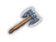
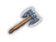

Each item belongs to one of the following categories:
All of the items regardless of their intended use can be used as both melee weapon or missile, so they all have appropriate stats, which are revealed when the item in question is greater identified. The exception to this are shields – they can't be used in melee.
Commands for manipulating items:
The following items can be used to recharge wands, listed with number of charges added B/U/C, sorted from worst to best:
Remember that a potentially endless supply of booze is available from beggars in Lawenilothehl. Give them 40 gold pieces, then Chat with them and they will often drop a potion of booze. Only one per beggar, though, so those who have given up their potion need to be killed (alignment hit) or led into the Wilderness to encourage more beggar generation. Get rid of all the other random monsters in the town to further encourage monster generation.
Potions of raw mana do not work. Note that potions of mana can be used to permanently increase the PCs Mana attribute; the player may want to save them for that purpose. Wizards can also recharge wands at level 32, only once per wand though. Wands of wishing (and few other wands) can't be recharged. For these, you'll want to use the chance to wrench a final charge from the wand, destroying it. See also potions of raw chaos below.
 These heavy items have a nice use: crashing doors. Throw one at a door and enjoy the sight of a broken door before you. This is not guaranteed; it seems to be Strength
dependent. There is a very nice side benefit to this: any trap that the door was protected with is destroyed along with the door. The trap does not go off as it is destroyed.
These heavy items have a nice use: crashing doors. Throw one at a door and enjoy the sight of a broken door before you. This is not guaranteed; it seems to be Strength
dependent. There is a very nice side benefit to this: any trap that the door was protected with is destroyed along with the door. The trap does not go off as it is destroyed.In addition, huge rocks can be used to keep ants from escaping anthills. Whenever an ant wants to escape, you get a message like "The uncursed huge rock (-10, 10d6) seems to be shaking.". Eventually the huge rock is destroyed ("Something from below destroys the uncursed huge rock (-10, 10d6)!") and ants can come out of the hole again. Sometimes this happens after only a few turns, sometimes it takes more than a hundred. Multiple huge rocks are destroyed one after the other and thus last longer than a single one.
A test PC kicked 200 statues with each status to pieces. The results were as follows:
 Items can be dipped in potions of raw chaos in order to transform them into new ones, but will not make wands of wishing or rings of djinni summoning. Everything created
will be cursed. Dipping items (other than artifacts) into a PoRC will transform it into a random item of the same type – useful for brass items. Equipped items are
removed (even if cursed) and cursed. There is a chance of spilling the potion, though, which corrupts the PC (spilling happens if 1d(Dx+10) > Dx). Worse is the possibility
of transforming an item into the exact same item. This causes an explosion which badly corrupts the PC, about 5 corruptions (100d100 CP's), and causes 10d30 of damage.
Needless to say, this can kill a low-level PC. Dipping a scroll of corruption removal into potion of raw chaos causes a massive explosion of 13d13 damage, producing death
message 'was ripped apart when confronting Order and Chaos'.
Items can be dipped in potions of raw chaos in order to transform them into new ones, but will not make wands of wishing or rings of djinni summoning. Everything created
will be cursed. Dipping items (other than artifacts) into a PoRC will transform it into a random item of the same type – useful for brass items. Equipped items are
removed (even if cursed) and cursed. There is a chance of spilling the potion, though, which corrupts the PC (spilling happens if 1d(Dx+10) > Dx). Worse is the possibility
of transforming an item into the exact same item. This causes an explosion which badly corrupts the PC, about 5 corruptions (100d100 CP's), and causes 10d30 of damage.
Needless to say, this can kill a low-level PC. Dipping a scroll of corruption removal into potion of raw chaos causes a massive explosion of 13d13 damage, producing death
message 'was ripped apart when confronting Order and Chaos'.PoRC will only create items of a danger level that corresponds to the level on which you dip the item. For creating an amulet of lifesaving, you should dip amulets on DL2. Your odds are poor – 1.08%. You can safely dip amulets of balance, free action, health, hunger, luck, chaos, order, speed, teleport control, cold hearts, water breathing, silver tongue, and mana. A heap of items that are dipped into PoRC will always transform into a single item.
Wands dipped into a PoRC will turn into a wand with a different number of charges. This is one way to recharge wands with 0 charges left. The type of wand, however, is unpredictable.
Potions of raw chaos can be created by dipping any corrupting artifact (those containing the essence of Chaos and Corruption + Moon Sickle) into any ordinary potion.
 In addition to swapping attributes, these can polymorph monsters when thrown. Blessed potions can polymorph items to another of the same type. Spellbooks are always transformed into
non-spellbooks and vice versa.
In addition to swapping attributes, these can polymorph monsters when thrown. Blessed potions can polymorph items to another of the same type. Spellbooks are always transformed into
non-spellbooks and vice versa.The item produced will be appropriate for the danger level where the dipping takes place. This is the basis of ring-based wish engines. Once one has blessed potions of exchange stacks of 19 rings can be dipped, potentially producing 19 rings of djinni summoning. These in turn are enough to produce 57 more potions of exchange on average. Since used rings of djinni summoning become brass rings, additional rings do not have to be wished for. The PC may have to throw in some wishes for potions of water to keep blessing the potions of exchange. Of course once the engine starts there are enough spare wishes to actually get some things that matter as well. :-).
In R+, every item from a stack is transformed individually. Additionally, there is a limit of one RoDS per game via dipping.
Regeneration occurs at the same rate whether walking around or resting. RegenRate is measured in turns, not game time. High speed or seven league boots lead to exactly the same regeneration rate in turns. Thus regeneration is faster with respect to game time if the PC is fast or walking around with seven league boots. If a PC with low walking energy cost wants to spend the minimum amount of game time regenerating, the best bet is to walk around while regenerating. The Cursed, Doomed, Lucky and Fate smiles intrinsics do not make a difference for regeneration purposes. Hunger status has no effect on regeneration.
| Condition | NaturalRegen |
|---|---|
| Human, Hurthling | 50 |
| Dark Elf | 70 |
| Gray Elf | 65 |
| High Elf | 60 |
| Gnome | 48 |
| Dwarf | 45 |
| Orc | 40 |
| Drakeling | 30 |
| Troll | 20 |
| Healer | halved |
| Most PCs | -1 (based on Toughness) |
| Some PCs | -1 once more (based on Toughness) |
| Mist Elf | 80 |
| Ratling | 35 |
The modifiers are applied in the order listed here. Eg. Trollish Healers with exceptional Toughness get a starting regeneration time of 20 / 2 - 1 - 1 = 8.
RegenRate = Max(2, NaturalRegen (*10 if Sick; *0.8 if Healthy talent; *1/0.5/0.125 if wearing C/U/B necklace of rapid healing; *10 if wearing rotting armor)).
The Healing skill provides additional chance for regeneration every turn: (Healing / (1200 (*4.67 if Sick)))%. So with 100 Healing the chance is 8.3% per turn (1.8% if Sick). The Candle birthsign provides additional regeneration every 12 20 turns.
RegenAmount = 1 + ClassBonus + CandleBonus + RoomBonus. ClassBonus is 1 for lvl 6-11 Healers, lvl 32+ Bards, lvl 32+ Druids in wilderness, 2 for lvl 12+ Healers, 0 otherwise. CandleBonus is 1 for Candle borns, 0 otherwise. RoomBonus is 3 if in "refreshing" room, 1 if in "herbs and antiseptics" room, 0 otherwise.
Separate from these RegenRate and RegenAmount calculations, every piece of regenerating equipment (except necklace of rapid healing) grants additional 1 HP per turn. The regenerating corruption grants additional 1 HP every 5 turns, but 1 scar every 1000 regenerations (-1 Dx or -1 Ap).
All HP regeneration is stopped, if the PC is in the "devoid of all life" room, or in water without Water breathing.
| Condition | NaturalRegen |
|---|---|
| Human, Drakeling | 50 |
| Troll | 100 |
| Dwarf | 90 |
| Hurthling | 60 |
| Orc | 55 |
| High Elf | 40 |
| Gnome | 40 |
| Dark Elf | 30 |
| Gray Elf | 25 |
| Most PCs | -1 (based on Mana) |
| Some PCs | -1 once more (based on Mana) |
| Mist Elf | 15 |
| Ratling | 55 |
PP regeneration is applied every turn if one the following checks pass:
RegenAmount = 1 + ClassBonus. ClassBonus is 1 for lvl 40+ Bards and lvl 12+ Druids in wilderness, 0 otherwise. PP regenerating equipment +1. Charged talent +1.
All PP regeneration is stopped if wearing anti-magical armor.

 Natural regeneration can be affected by drinking potions of troll blood (for hit points) or potions of raw mana (for power points).
These potions cannot lower RegenRate below 5 turns or raise it above 200. Their effectiveness depends on their B/U/C status:
Natural regeneration can be affected by drinking potions of troll blood (for hit points) or potions of raw mana (for power points).
These potions cannot lower RegenRate below 5 turns or raise it above 200. Their effectiveness depends on their B/U/C status:
| Potion status | Modification to RegenRate |
|---|---|
| Blessed | -4d3 |
| Uncursed | -2d3 |
| Cursed | +2d3 |
Bottom line: always bless your potions of troll blood or raw mana.
As can be seen, many blessed potions of troll blood will get you more than good Healing skill, but having Healing at 100 is best. Likewise, potions of raw mana are nice, but not as important as having a high Concentration skill.
 There are four types of troll corpses (troll, troll berserker, troll chief, troll king). They all yield either of two messages when eaten by a non-Troll:
There are four types of troll corpses (troll, troll berserker, troll chief, troll king). They all yield either of two messages when eaten by a non-Troll:
Message a. indicates that natural HP regeneration decreased by one. Message b. indicates that natural HP regeneration did not change.
For Troll PCs, the messages are slightly modified:
The behavior is the same: a. decreases natural HP regeneration, b. does not.
No corpse can reduce the regeneration time below 6. Trying this always gives b. message. This differs from potions of troll blood, which always result in the "Your blood suddenly curses faster..." message, even if the regeneration time is already minimal. Note that the lower threshold is 6, unlike the threshold for potions of troll blood, which is 5. This means that Trolls, who cannot make use of potions of troll blood, cannot lower their regeneration time to 5, unlike the other races.
The probabilities of getting a decrease in regeneration time depends only on the B/U/C status of the corpse. Specifically, it does not depend on:
Results indicate that blessed corpses work in 100% of the cases (although, like all corpses, they cannot lower it below 6), and uncursed or cursed corpses work in 50% of the cases. There was no observable difference between uncursed and cursed corpses:
There was no difference in weight or satiation value of the various kinds of troll corpses. All corpses weigh 240s if not cooked, irrespective of B/U/C (rotting) status, and 228s (= 5% less) if cooked, again irrespective of B/U/C (rotting) status.
An uncursed corpse yields 500 units of satiation (like a large ration). This is doubled if the corpse is cooked (presumably this holds for other corpses too, but this needs further verification). The resulting value is modified by +25% for blessed corpes and -50% for cursed corpses, just like for other food items. So, e.g. a blessed cooked troll chief corpse gives 500 * 2 * 1.25 = 1250 units of satiation.
Summary
 Seven league boots can dramatically reduce the time needed to walk around in the wilderness, depending on their B/U/C status:
Seven league boots can dramatically reduce the time needed to walk around in the wilderness, depending on their B/U/C status:
B/U/C seven league boots also alter the base energy cost for movement outside the wilderness from 1000 to 500/750/1500 750/900/1500, respectively. The Long Stride talent stacks, reducing base energy cost further. Seven league boots should be blessed immediately. They enable the PC to outrun anything other than quicklings. Consequently, some players regard seven league boots as the most important item in the game, and will use a wish to obtain them, if necessary.
 Using a stethoscope, you can determine a living monster's statistics precisely. Uncursed provides DV, PV, and HP, blessed in addition also level, number of attacks,
damage, and speed. Cursed stethoscope doesn't work. Furthermore, using a stethoscope, you can easily find secret doors: scan a wall block, and if it "sounds hollow", it's
a secret door. In addition to monsters and secret doors, stethoscopes can also be used on closed doors to find out the number of monsters behind it. The messages are:
Using a stethoscope, you can determine a living monster's statistics precisely. Uncursed provides DV, PV, and HP, blessed in addition also level, number of attacks,
damage, and speed. Cursed stethoscope doesn't work. Furthermore, using a stethoscope, you can easily find secret doors: scan a wall block, and if it "sounds hollow", it's
a secret door. In addition to monsters and secret doors, stethoscopes can also be used on closed doors to find out the number of monsters behind it. The messages are:
| Message | Meaning |
|---|---|
| Silence. | corridor (this message is shown even if the corridor is full of monsters, so be warned) |
| You hear nothing. | empty room |
| You hear some low-volume sounds. | 1 monster in the room |
| You hear some sounds. | 2-3 monsters |
| You hear many sounds. | 4-8 monsters |
| You hear lots of sounds. | 9 or more monsters (tension rooms and rooms filled with breeders or summoned creatures also give this message) |
See section 0.15.3 concerning a Healer's special ability with stethoscopes.
Other potions used for dipping are usualy wasted. The exception is when an item containing the essence of Chaos and Corruption is dipped into a potion – then the potion is transformed into raw chaos. The other exception is Alchemy.
When dipping a stack of items into a potion, the amount you can dip depends on the weight of the item. You can dip:
| Weight | Stack size |
|---|---|
| 1s | 19 |
| 2s | 9 |
| 3s | 6 |
| 4s | 4 |
| 5-6s | 3 |
| 7-9s | 2 |
| 10+s | 1 |
You can always only dip 1 potion of -attribute- or 1 potion of gain attributes. You can dip missile ammo in stacks of 40.
List of all milkable monsters:
 



Note that barbarian encounters in wilderness can practically net a large amount of arrows (including prefixed ammo) in short time. Arrow and spear traps can also provide ammunition
if triggered multiple time by monsters or by PC with Ctrl-t command. Triggering traps on yourself will always lead to a successful hit, however, with sufficient protection
(in terms of PV) damage to PC may be nullified. Note that spear traps always produce base iron spears without any prefixes/suffixes.
Though not milking in the strictest sense of the term, giant ant workers and other digging monsters can be similarly milked for rocks by allowing them to dig out large sections of a dungeon level. Casting Earthquake is another way of getting large amounts of rocks.
Removing curse
Unequipping the item
Morphing
! dipping items into a potion of raw chaos or blessed potion of exchange will change the item into another of its type, removing it from your body. Keep in mind that if you are using raw chaos potions you have a risk of explosion, which does 10d30 damage and corrupts heavily (100d100 CPs).
Destroying
Equipped rings of ice or fire have chance of negating equipment fire or ice damage, respectively. The RingBonus is 98/80/50 B/U/C for each equipped ring. All damage is negated if Min(99, RingBonus+Luck) <= 1d100. Fireproof/waterproof blankets protect inventory (not equipment) 100% against fire/water damage respecively, regardless of B/U/C status. Fireproof blanket is destroyed if 5/15/100 B/U/C + (GoodLuck-BadLuck) * 10 >=1d1000. Always the best blanket is selected if there are multiple. Note that in this case BadLuck actually increases fireproof blanket longevity (probably bug fixed in R+, Bad Luck decreases longevity). Waterproof blankets are not destroyed in this manner.
For fire, ice, acid and lightning elemental damage being resistant decreases chances of item damage. The Divisor starts at 1; there is +2 if you are intrinsically resistant, +3 if you are intrinsically immune, +1 per equipped item granting resistance, and +3 per equipped item granting immunity. Note this is different from resistance to HP damage.
Items which are not immune (0% in the below table) have a base chance of destruction or damage depending only on the item's material and the element in question. This chance is reduced by 20% (rounding down) if the item is blessed. It is then increased by 50% if the item is rusty and twice your Luck is subtracted. Finally, the chance is divided by the Divisor above.
| Material | Fire | Water | Crushing | Ripping | Lightning | Acid | Cold | Items |
|---|---|---|---|---|---|---|---|---|
| leather | 10% | 0% | 0% | 10% | 10% | 20% | 0% | leather cap/apron/armor, furs, leather/thick/hard girdle, leather/fine cloak, many gauntlets, most boots, whips |
| cloth | 40% | 0% | 0% | 50% | 20% | 10% | 0% | hood, hat, clothes, robes, cloaks, slings, bandage |
| glass | 20% | 0% | 80% | 60% | 5% | 0% | 10% | potions, glass amulet/wand, worthless pieces |
| paper | 95% | 40% | 10% | 50% | 20% | 50% | 5% | scrolls, books, spellbooks |
| various | 25% | 0% | 10% | 25% | 5% | 15% | 0% | food, corpses, studded leather armor, shell armors, strange metal/copper-hewn/bulky girdle, pickaxe, leather amulet, pearl/coral/shining necklace, brass/wedding ring, blankets, fluff ball, magical writing set, tinderbox, box with flint and steel, thieves picks |
| wood | 30% | 0% | 30% | 30% | 20% | 20% | 0% | bone helmet/bracers/amulet, wooden shield/stick/ring, clubs, cudgels, staves, bows, arrows, quarrels, boomerang, many wands, torches, log, giant boar skull, instruments, bone |
| gold | 15% | 0% | 0% | 10% | 0% | 25% | 0% | brass/silver/copper bracers, many rings, brass amulet, golden ball, gold piece, holy symbol |
| stone | 2% | 0% | 5% | 8% | 3% | 0% | 1% | helm of mental stability, stone weapons, stone/opal/onyx/ruby amulet, marble/jade ring, stone/marble/obsidian wand, rocks, statues, figurines, lump of clay |
| iron | 3% | 15% | 5% | 10% | 0% | 25% | 0% | most armor except cloaks, moloch armor (eternium), steel/iron/bronze bracers (iron), shields, most weapons, amulets (many iron, 2 adamantium – obsidian/marble, 1 mithril – silver), rings (many iron, 4 adamantium – adamantium/onyx/opal/ordinary, 1 mithril – mithril), wands (many iron, 1 eternium – glowing), crossbows (iron), many missiles, keys (iron), anvil (iron), ores, ingots, skill sets (iron), stethoscope (iron), whistle (iron), glockenspiel (iron) |
| mithril | 0% | 0% | 1% | 1% | 0% | 5% | 0% | |
| adamantium | 0% | 0% | 1% | 0% | 0% | 1% | 0% | |
| eternium | 0% | 0% | 0% | 0% | 0% | 0% | 0% | |
| crystal | 0% | 0% | 0% | 0% | 0% | 0% | 0% | crystal armor/shield/dagger, gems |
| truesilver | 0% | 0% | 1% | 1% | 0% | 1% | 0% | armor, weapons, shields, missiles |
Some other facts regarding item destruction:
| Monster | Item drops | Chance |
|---|---|---|
| giant frog | frog legs | 25% [1] |
| crime lord, half-orc bouncer | gold | 100% |
| moloch, greater moloch | moloch armor | 5% |
| dwarven chaos knight | wand of digging | 10% |
| pickaxe [2] | 30% | |
| animated tree | log | 8.3% |
| dwarf | pickaxe | 16.7% |
| stone golem | rocks | 100% |
| giant boar | giant boar skull | 33.3% |
| chaos knight, chaos warrior | eternium plate mail | 33.3% |
| eternium medium shield | 25% | |
| eternium cap | 20% | |
| eternium boots | 16.7% | |
| thick gauntlets | 16.7% | |
| eternium long sword | 33.3% | |
| mummy, greater mummy | mummy wrapping | 25% |
| skeleton, skeletal warrior | 2d6 bones | 16.7% |
| balor, greater balor | scourge | 100% |
| ratling duelist | gauntlets | 100% |
| missile weapon user | missile weapon | 10% [3] |
| dwarven artificier | eternium warhammer, heavy crossbow, eternium quarrels, anvil | 100% |
| dwarven smith | eternium warhammer, anvil | 100% |
| Emperor Moloch | moloch armor, crumpled scroll | 100% |
| mummy lord | ankh, ancient mummy wrapping | 100% |
| mad carpenter | manual of bridge building, hatchet | 100% |
| black druid | black torc | 100% |
| orb guardian | orb | 100% |
| chaos dragon | crown | 100% |
| Assassin Prince | black rune-covered dagger | 100% |
| Minotaur Emperor | axe of the minotaur emperor, potion of strength, 2 potions of cure corruption, spellbook [4] | 100% |
| Khelavaster not saved | wand of digging, amulet of protection, potion of invisibility, eternium dagger, boots of sneakiness, gold, robe | 100% |
| Khelavaster saved | 6 scrolls of corruption removal, 4 potions of ultra healing, spellbook of teleportation, spellbook of identify, wand of digging (8), eternium dagger (everything blessed) | 100% |
[1] Instead of a corpse.
[2] Never both.
[3] Moderate-sized monsters will have a 10% chance to drop a big missile weapon (long bow or heavy crossbow) instead of a small one. Smaller monsters will always drop a smaller weapon.
[4] Different rewards, see 2.14.1.2
| Monster | Accepts | Effect |
|---|---|---|
| big dog, blink dog, large dog, cute dog | bone, raw meat, fresh meat, sausage | tames |
| black hurthling | fish meat | tames |
| wild cat, cave lion | rat corpse, giant rat corpse, fish meat | tames |
| farmer | plant seed, herb seed | +alignment [1] |
| farmer | sickle, scythe, flail | iron ration, +10 alignment |
| beggar | food | +satiation*0.1 alignment, min 10, max 100 |
| berserker | wedding ring | tames if same opposite gender |
| giant raccoon | fish meat | tames |
| child, dwarven child, baby water dragon (Blup) | candy | +alignment (2 or 10) |
| child, dwarven child | weapon | |
| doppelganger, Ratling Rebel | anything | |
| rust monster | iron items | tames |
| injured skeleton or skeletal warrior | bone | heals 1d6 |
| -color- dragon (baby, regular, ancient, great wyrm) | -color- dragon scale mail, -color- dragon hide gauntlets | enrages |
| any animal | fresh meat, raw meat | tames |
| any humanoid | food | +100 alignment |
| anyone | gold | |
| ancient sage (Khelavaster) | books, scrolls | |
| ancient sage | crumpled scroll | TotRR |
| dying sage (Khelavaster) | amulet of life saving | +5000 alignment |
| Ghost Librarian | books, scrolls | blessing 2000 turns |
| priest (Ruun) | gold | alter alignment or +piety [2] |
| village elder (Rynt) | healing items, stethoscope | +alignment; see 1.2.2 |
| fool (Yggaz) | potion of booze | potion |
| sheriff (Tywat Pare) | evil monster corpses | gold, +alignment; see 1.2.1 |
| carpenter (Yrrigs) | hatchet | Bridge Building [3] |
| Demented Ratling | artifact | Demented Ratling +10 levels; see 3.5.8 |
| druid (Guth'Alak) | chaos corpse; see 1.2.3 | potion of cure corruption |
| Mad Minstrel | Weird Tome | 5 cursed scrolls of corruption removal |
| grizzled gladiator (Bart) | ratling pamphlet | |
| Tiny Girl | cute dog corpse | +600 alignment |
| baby water dragon (Blup) | potion of carrot juice | Swimming |
| old crone (Gaab'Baay) | anything |
[1] Alignment +Min(SeedsGiven,30) * 10 / Max((TotalSeedsGiven / 10),1). Then repeat each time divisible by 30 (31 and 60 both run twice; TotalSeedsGiven is calculated after each run.)
[2] If different alignments, alignment is drawn towards Ruun's by gp/20. Otherwise gain gp/15 piety.
[3] If BridgeBuilding = 0 then +1dLe+1d10+8 else +Le*0.8+2d5.
Staves have a base recharge turn timer that depends on the status of the staff: blessed staves recharge 4 times as fast as uncursed staves, and uncursed staves recharge 2 times as fast as cursed staves. If the PC wields a staff when it is zapped, the recharge time is halved. If the PC has more than 100 Speed, both the duration of the recharge time and any active effect will be multiplied by Speed/100. The following actions will deduct additional turns from the timer:
All magic staves appear as "quarterstaff" when unidentified. They cannot be activated until they have been identified. Magic staves are counted as basic melee weapons, and thus can be generated with prefixes and suffixes. For instance, it's possible for a "flaming staff of strength and devastation" to be generated. Magic staves benefit from and train the Staves weapon skill. For the list of all magic staves, see Appendix B.
 Mushrooms are special food items dropped by fungoid enemies, found in the Fungal Caves (section 3.6.2). They appear as "strange
mushroom" when unidentified. All mushrooms dropped by normal fungoids are generated cursed. Certain types of mushrooms are only dropped by the Fungoid Overlord.
Those are quite valuable, offering significant short and long-term benefits.
Mushrooms are special food items dropped by fungoid enemies, found in the Fungal Caves (section 3.6.2). They appear as "strange
mushroom" when unidentified. All mushrooms dropped by normal fungoids are generated cursed. Certain types of mushrooms are only dropped by the Fungoid Overlord.
Those are quite valuable, offering significant short and long-term benefits.Certain common mushrooms can be quite useful, especially in large quantities. Mushrooms of energy and kaboom can be helpful for aspiring Archmages. Mushrooms of shivering are helpful for dealing with cursed or autocursing weapons. Mushrooms of the glow can be use to raise important attributes in conjunction with potion of exchange. Mushrooms cannot be wished for.
For the list of all mushrooms, see Appendix G.
 With the exception of whistles, instruments are used to calm and tame animals using the Music skill (section 0.11.5).
Whistles are said to call pets towards the PC instead, though reportedly, this often does not happen. Bards start with two or more instruments.
B/U/C status of an instrument determines the range of calming/taming effect (4/3/2 tiles respectively).
With the exception of whistles, instruments are used to calm and tame animals using the Music skill (section 0.11.5).
Whistles are said to call pets towards the PC instead, though reportedly, this often does not happen. Bards start with two or more instruments.
B/U/C status of an instrument determines the range of calming/taming effect (4/3/2 tiles respectively).
Strength determines CC as follows: St 1: 640s (+40 per 1 St) St 10: 1000s (+100 per 1 St) St 15: 1500s (+150 per 1 St) St 20: 2250s (+225 per 1 St) St 25: 3375s (+300 per 1 St) St 99: 25575s. The CC is then modified by the following factors: